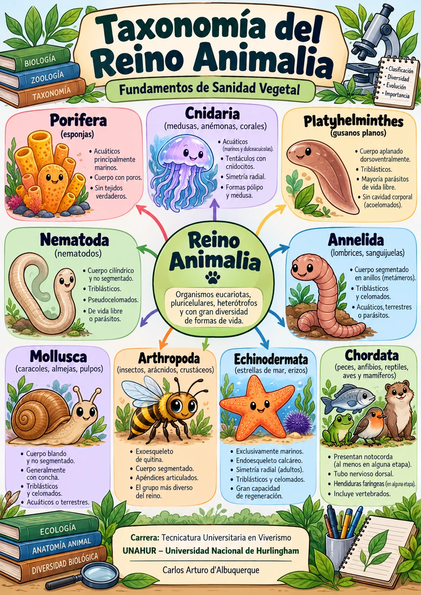

UNAHUR · VIVERISMO · GUÍA DE ESTUDIO 03
Nueve caminos para descubrir la vidaUn reino.
Muchas formas
de vivir.
Recorré el Reino Animalia: desde las esponjas hasta los cordados, descubrí las características que distinguen a nueve filos.

ANTES DE EMPEZAR
Diversidad que se puede ordenar.
El panorama describe organismos eucariotas, pluricelulares y heterótrofos, con una gran diversidad de formas de vida. El recorrido de esta guía es:
El índice sigue el panorama de izquierda a derecha y de arriba abajo. La imagen de Insecta se incorpora dentro de Arthropoda para distinguir el filo de su clase. Se priorizan las fichas específicas cuando el texto del panorama es ambiguo.
01 / TU RECORRIDO DE ESTUDIO
Del 01 al 09, como en el panorama.
Elegí una ficha o avanzá paso a paso. Podés marcar las que ya repasaste.
02 / ENCONTRÁ LAS DIFERENCIAS
Una mirada, muchas pistas.
Compará el cuerpo, la cavidad corporal y el ambiente. El orden del panorama se conserva al filtrar.
| Filo | Cuerpo y estructuras | Cavidad corporal | Ambiente | Ejemplos |
|---|
«No indicado/a» significa que el material no detalla esa característica; no significa que el insecto no la posea. Los nombres y descripciones siguen las láminas originales.
03 / HACÉ MEMORIA
Observá la pista.
Recordá el nombre.
Una ficha por filo, en el mismo orden del panorama. Intentá responder antes de darla vuelta.
04 / DESAFÍO DEL JARDÍN
Nueve filos. Dieciocho desafíos.
Dos preguntas por filo, siguiendo el panorama. Aprendé con cada explicación.
TU MATERIAL DE CONSULTA
Diez láminas para explorar.
Panorama, ocho fichas de filos y el detalle de Insecta dentro de Arthropoda. Tocá para ampliar.